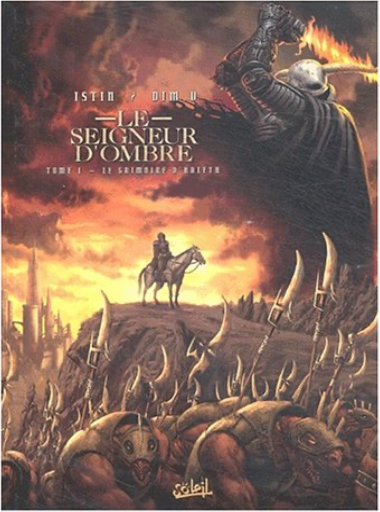

Books
Movies
Albums
Videogames
Games
BD
BD Camille
Blu-ray
Business
Camille
Comics
Cooking
Lego
Manga
Pauline
Photography
Sport
Star Wars
T'choupi
Travel
TV Shows
Un livre dont vous êtes le héro
Vinyl
Walt Disney
46
47
48
49
50
le grimoire de féerie, tome 2 : le grand pouvoir
jean-luc istin, françois debois, jean-marie minguez
5

le seigneur d'ombre, tome 1 : le grimoire d'haleth
jean-luc istin, dim.d
4
le seigneur d'ombre, tome 2 : renaissance
jean-luc istin, dim.d
le seigneur d'ombre, tome 3 : les gardes pourpres
jean-luc istin, dim.d
le seigneur d'ombre, tome 4 : une nouvelle ère
jean-luc istin, dim.d
l'hiver de la famille Souris
Kazuo Iwamura
La fête d'automne de la famille Souris
Kazuo Iwamura
La lessive de la famille Souris
Kazuo Iwamura
Le pique-nique de la famille Souris
Kazuo Iwamura
le changement climatique expliqué à ma fille
jean-marc jancovici
4.5
les brumes d'asceltis, tome 1 : la citadelle oslanne
nicolas jarry, jean-luc istin
4.5
les brumes d'asceltis, tome 2 : le dieu lépreux
nicolas jarry, jean-luc istin
46
47
48
49
50


 Made with Delicious Library Made with Delicious Library
Made with Delicious Library Made with Delicious Library